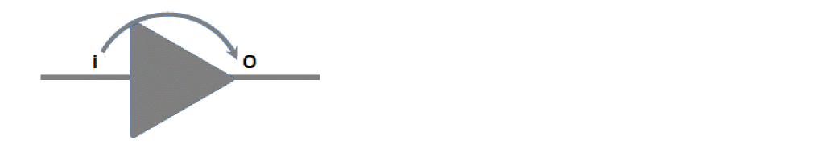

Required Inputs for Cell EM Analysis
This section describes the various inputs for the Cell EM analysis:
- Define Cell EM View
- Library Requirements
- User-Defined EM Constraints
- Define Activity
- Derating Frequency
- Activity Propagation
- STA Use Model
Define Cell EM View
The set_analysis_view -dynamic <view_name> parameter is used to control the EM-specific views for analysis and ECO. If this parameter is not defined, the first setup view defined with set_analysis_view command becomes the EM view for deriving the activity definition based on the below settings:
set_db timing_analysis_check_type (Default: setup)
If both the -setup and -hold parameters are defined with the set_analysis_view command, then Tempus picks the setup view for activity.
Library Requirements
The cell EM data (electromigration group or frequency-based max_cap table) should be present within the standard cell library.
The maximum capacitance group contains capacitance values with respect to various Transition Frequency (FR) over the output pin of cell and input slews over related pin. The unit of Frequency is inverse of the library time unit.
In the max_cap table example below, the index_1 and index_2 values are written in the library header:
max_cap (maxcap_temp1ate_7x7) {
re1ated_pin : "i";
index_1 ("0.0612105, 0.344434, 1.79586, 4.46565, 4.46575, 4.46706, 4.48205") ;
index_2 ("0.002, 0.00537075, 0.0144225, 0.0387298, 0.104004, 0.27929, 0.75") ;
values ( \
"3.58855, 3.58855, 3.58855, 3.58855, 3.58612, 3.58022, 3.56612", \
"0.670169, 0.664944, 0.652355, 0.624836, 0.622707, 0.60305, 0", \
"0.141401, 0.138162, 0.129487, 0.108796, 0.0628273, 0, 0", \
"0.0713813, 0.0704513, 0.0652987, 0.000574319, 0, 0, 0", \
"0.0713797, 0.0704497, 0.0652969, 0.0001, 0, 0, 0 ", \
"0.0713608, 0.0704304, 0.0652752, 0, 0, 0, 0", \
"0.0711427, 0.0702078, 0.0650252, 0, 0, 0, 0" \
) ;
}
The following example shows a Lut table for max_cap group:
maxcap_1ut_temp1ate (maxcap_temp1ate_7x7) {
variab1e_l : frequency ;
variab1e_2 : input_transition_time;
index_1 ("l, 2, 3, 4, 5, 6, 7") ;
index_2 ("0.002, 0.00537075, 0.0144225, 0.0387298, 0.104004, 0.27929, 0.75");
}
For example, for a buffer cell, it can be defined as follows:

In the above example, if frequency at pin “O” is 0.344434 GHz (FR=TD/2) and the slew value at the pin “i” is 0.00537075* ns, the maximum capacitance limit on pin “O” will be 0.664944* pF.
If the max_cap construct is not present, Tempus will use reverse lookup from the electromigration table.
The EM toggle rate consists of three types of current-based toggle rate tables:
For definitions of all types of currents and their equations, refer to the “Voltus EM Analysis” section in the Voltus User Guide.
Example 1
In the example below, the index_1 and index_2 values are written in the library header.
electromigration () {
related_pin : "i 0";
em_max_toggle_rate (em_temp1ate_7x7)
current_type : "average" ;
index_1 ("0.002, 0.00537075, 0.0144225, 0.0387298, 0.104004, 0.27929, 0.75") ;
index_2 ("0.0001, 0.000362139, 0.00131145, 0.00474927, 0.017199, 0.0622842,
0. 225556 ") ;
va1ues ( \
"109.147, 106.267, 96.5867, 34.8601, 10.4366, 2.94733, 0.818873", \
"103.488, 101.484, 96.711, 34.8472, 10.4201, 2.94551, 0.818521", \
"80.2824, 80.3635, 79.7469, 34.6124, 10.3884, 2.94171, 0.818393", \
"45.2761, 45.3841, 45.7716, 33.2348, 10.3482, 2.93614, 0.817915", \
"19.6274, 19.6508, 19.7604, 20.2257, 10.2735, 2.92694, 0.816591", \
"7.64072, 7.64348, 7.65755, 7.73124, 8.02434, 2.91884, 0.814551", \
"2.87723, 2.87747, 2.87836, 2.88685, 2.92963, 2.61789, 0.812657" \
];
}
em_max_togg1e_rate (em_temp1ate_7x7) {
current_type : "peak";
index_l ("0.002, 0.00537075, 0.0144225, 0.0387298, 0.104004, 0.27929, 0.75");
index_2 ("0.0001, 0.000362139, 0.00131145, 0.00474927, 0.017199, 0.0622842, 0.225556 ");
va1ues ( \
"4583.58, 4375.53, 3859.22, 1069.53, 289.815, 79.61, 12.7996", \
"4334.35, 4363.88, 3787.44, 1070.82, 289.099, 79.5119, 12.7994", \
"2749.18, 2760.16, 2785.69, 1086.47, 292.398, 79.825, 12 .8068", \
"1308.28, 1315.43, 1324.62, 1080.56, 307.583, 80.9342, 12.8356", \
"535.263, 542.185, 543.267, 547 .118, 319 .488, 85.2959, 12.9186", \
"209.524, 210.654,211.149, 211 .451, 213.715, 91.1989, 11.8587" \
];
}
em_max_toggle_rate (em_template_7x7) {
current_ type : "rms ";
index_1 ("0.002, 0.00537075, 0 .0144225, 0.0387298, 0.104004, 0.27929, 0.75");
index_2 ("0.0001, 0.000362139, 0.00131145, 0.00474927, 0.017199, 0.0622842, 0.225556 ") ;
va1ues ( \
) ;
"1850.77, 1823.6, 1457.41, 364.993, 93.8955, 25.316, 6.94221", \
"1892.52, 1876.97, 1464.18, 366.111 , 93.9605, 25.3202, 6.94236 ", \
"1663.63, 1691.62,1494.75, 373.998, 94.6712, 25.3759, 6.94677 ", \
"1081.37, 1090.89, 1120, 396.894, 97.1714, 25.574, 6.96208", \
"527.49, 529. 404, 537.076, 429.715, 104.015, 26.1671, 7.00718", \
"218.094, 218.32, 219.45, 224 .495, 116.875, 27.792, 7.13732 ", \
"83.7114, 83.7487, 83.8333, 84.5024, 87.4348, 31.2242, 7.4894" \
];
}
}
The following example shows a Lut table for the EM group:
em_lut_template (em_template_7x7) {
variable_l : input_transition_time;
variable_2 : total_output_net_capacitance;
index_1 ("0.002, 0.00537075, 0.0144225, 0.0387298, 0.104004, 0.27929, 0.75 ");
index_2 ("0.0001, 0.00352928, 0.00882319, 0.022058, 0.055145, 0.137862, 0.344656 ");
The table index is used for input transition at the related pin, and output load exists at the current pin for which the electromigration table is created. The table is used to identify the maximum transition density limit for a design under various current types.
Refer to the Reports section on how to interpret these values.
If the max_cap table is not available and includes only electromigration, then the software performs reverse look up table. See figure Buffer Cell.
If the following conditions are met:
The software will follow the steps given below:
- For electromigration table, Tempus operates on Toggle Count/Transition Density (TD). Here TD = 4000000000 (2*FR)
- For slew 0.00537075, Tempus selects the entire range of capacitance and corresponding Toggle Count. See Example 1.
-
TD in library is written with unit of GHz (inverse of time unit), the
max_capvalue will be interpolated between 0.017199, 0.0622842.
max_cap and electromigration tables are used, the software gives preference to the max_cap table.User-Defined EM Constraints
If there are no EM .libs available, you can define both max_cap and max_trans based on the frequency (toggle rate) constraint with the following commands:
set_max_cap_per_freq and set_max_transition_per_freq commands use model because there is no lookup table data available.Define Activity
The activity can be defined using the set_default_switching_activity or set_switching_activity command, or by using the dynamic switching activity files, such as, VCD, TCF, FSDB, PHY, or SAIF.
The defined activity follows the below priority order:
- set_switching_activity
- read_activity_file
-
sdc_constant - set_default_switching_activity
- propagate_activity
The blackbox, sequential gates, and clock gates require special handling in Cell EM analysis for defining activity. The following default activities are a must for Cell EM analysis.
set_default_switching_activity -black_box_density 0
-black_box_duty 0 -sequential_activity 0.2 -clock_gates_output 2.0
set_switching_activity command is set to density/duty on a particular pin or net, whereas the set_default_switching_activity command is set the default activity, -input_activity, or -global_activity, which is not for a particular net or pin.Default Activity
If none of the activity is defined for pins or ports, Tempus uses the default values of activity. Refer to the set_default_switching_activity command for more details on activity defaults.
Default Period
If any pin or port is not having clocks or if there is any pin or port that has been kept open, Tempus uses the default period/frequency for defining transition density (TD) over the pin/port. If you have not defined any default period, the software decides the default period based on the clock reaching the maximum number of cells in a design.
After propagation activity, if any net with 0 toggling is present in the design either by annotation or by defined activity, except constant, the net can be directly assigned to the Toggle Rate (TD) using the following command:
set_db timing_report_default_frequency_for_unconstrained_nets 2 (default :1e9)
Tempus calculates the Toggle Count/Transition density = 2 *FR, in this example it will be 4; and default will be 2e9.
Derating Frequency
You can derate the required frequency for a pin using the set_design_rule_derate command. The value of derate gets multiplied to the required frequency (FR) for a library pin. This command is used to derate the frequency:
The set_design_rule_derate command can also be run on an interactive shell after using the update_timing command.
For details on the effect of the set_design_rule_derate command and its usage, refer to the Reports section (Example 6).
Activity Propagation
The propagate activity is a required step to complete the cell EM Flow. Tempus will propagate activity based on the duty and activity defined for pins/port/nets using cell Boolean function.
The following command is used to run the propagate activity:
propagate_activity -set_net_frequency true
To start the run, the propagate_activity command requires the update_timing session. If the session is not timing updated, the command automatically runs the update_timing command and then executes propagate_activity.
-
The
set_switching_activitycommand should be placed beforepropagate_activity. -
The
propagate_activitycommand must be invoked afterupdate_timing.
-
The
propagate_activitycommand should be replaced withupdate_timing. - Using the activity definition and propagation, the toggle rate at each pin will be calculated. This toggle rate is then used for maximum capacitance and frequency violation reporting.
- The propagate activity is an essential step, which is also supported in DSTA.
STA Use Model
To identify cell-level EM violations, you need to configure the required attributes before running any reporting commands. The following section covers Tempus-specific variables that are essential for reporting cell EM violations.
By default, Tempus supports reading electromigration constructs from the .lib file so you are not required to specify the attributes separately, except for reporting.
The following use model covers STA in Single-Model Single-Corner (SMSC), Concurrent Multi-Mode Multi-Corner (CMMMC), and Distributed Multi-Mode Multi-Corner (DMMMC) modes.
The reporting attributes for cell EM are given below:
-
The following attribute flags a warning message when a cell is missing electromigration groups or
max_capgroup on any cell. This setting must be made before reading the .lib.set_db timing_library_flag_cell_missing_em_data 1
Default:0
For example:**ERROR: (TECHLIB-1260): Cell 'BUFX14' does not have electromigration max_cap group on any pin (File /path/dummy.lib, Line 97)
-
The following attribute reports DRV violations caused by EM and must be used for EM analysis.
set_db timing_report_drv_per_frequency_per_input_slew true
Default:false -
The following attribute handles out-of-bound slew in the EM table when the enable warnings are printed. With this setting, Tempus does not perform extrapolation and will use the last value present in the library.
For example, if a library is characterized for slew range: 4, 10, 20, 30, 40, and slew for input pin is 45, then Tempus performs extrapolation to find the correct value ofmax_capfor those 45 slews. However, when this attribute is enabled, Tempus uses the last value, which is equivalent to 40.set_db timing_library_em_cap_lookup_slew_out_of_bounds true
Default:false -
The following attribute handles out-of-bound frequency violations and indicates when the frequency goes beyond the limit. Tempus performs clipping, as mentioned in the last example.
set_db timing_library_handle_out_of_bound_frequency true
Default:false -
The following attribute enables flags in the
report_freq_violationcommand to show if the slew/load values are beyond the library index.set_db timing_report_enable_em_index_clipping_report true
Default:false
For more details, refer to the Reports section.
Return to top